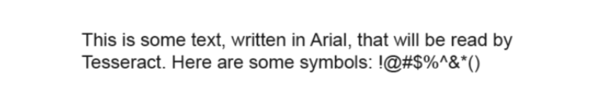

在读取和处理图像、图像相关的机器学习以及创建图像等任务中，Python 一直都是非常出色的语言。虽然有很多库可以进行图像处理，但目前我只接触到Tesseract.
Tesseract
Tesseract 是一个 OCR 库,目前由 Google 赞助(Google 也是一家以 OCR 和机器学习技术闻名于世的公司)。Tesseract 是目前公认最优秀、最精确的开源 OCR 系统。 除了极高的精确度,Tesseract 也具有很高的灵活性。它可以通过训练识别出任何字体，也可以识别出任何 Unicode 字符。
安装Tesseract
Windows 系统
下载可执行安装文件https://code.google.com/p/tesseract-ocr/downloads/list安装。
Linux 系统
可以通过 apt-get 安装: $sudo apt-get tesseract-ocr
Mac OS X系统
用 Homebrew(http://brew.sh/)等第三方库可以很方便地安装
brew install tesseract
要使用 Tesseract 的功能，比如后面的示例中训练程序识别字母，要先在系统中设置一个新的环境变量 $TESSDATA_PREFIX，让 Tesseract 知道训练的数据文件存储在哪里，然后搞一份tessdata数据文件，放到Tesseract目录下。
在大多数 Linux 系统和 Mac OS X 系统上,你可以这么设置:
$export TESSDATA_PREFIX=/usr/local/share/Tesseract
或者
hushiwei@localhost ~ more ~/.bash_profile
alias l='ls -lF'
alias ll='ls -alF'
JAVA_HOME=`/usr/libexec/java_home`
SCALA_HOME=/Users/hushiwei/devApps/scala-2.10.5
MAVEN_HOME=/Users/hushiwei/devApps/maven-3.3.9
TESSDATA_PREFIX=/Users/hushiwei/devApps/Tesseract
在 Windows 系统上也类似,你可以通过下面这行命令设置环境变量:
#setx TESSDATA_PREFIX C:\Program Files\Tesseract OCR\Tesseract
安装pytesseract
Tesseract 是一个 Python 的命令行工具，不是通过 import 语句导入的库。安装之后,要用 tesseract 命令在 Python 的外面运行，但我们可以通过 pip 安装支持Python 版本的 Tesseract库：
pip install pytesseract
简单示例
目前只能处理规范的文字,那么什么算格式规范呢?
格式规范的文字具有以下特点:
- 使用一个标准字体(不包含手写体、草书,或者十分“花哨的”字体) • 虽然被复印或拍照,字体还是很清晰,没有多余的痕迹或污点
- 排列整齐,没有歪歪斜斜的字
- 没有超出图片范围,也没有残缺不全,或紧紧贴在图片的边缘
格式规范的图片示例

命令行方式
那么试一试Tesseract,,看看效果如何.用起来也是非常简单.读取图片,然后把结果写入到一个文本文件中
hushiwei@localhost ~/Desktop tesseract test.png text
Tesseract Open Source OCR Engine v3.05.01 with Leptonica
Warning. Invalid resolution 0 dpi. Using 70 instead.
接着打开这个文本看看效果
hushiwei@localhost ~/Desktop more text.txt
This is some text, written in Arial, that will be read by
Tesseract. Here are some symbols: !@#$%"&'()
除了一个小符号没有识别出来,其他的字符基本上都识别对了.
python代码方式进行识别
用之前安装的pytesseract模块,就可以很方便的完成我们想要的效果
import pytesseract
from PIL import Image
# 打开一个图片
image=Image.open('test.png')
# 调用pytesseract的image_to_string方法识别出图片中的文字,返回识别出来的文字
text=pytesseract.image_to_string(image)
# 打印文字看看效果
print text
输出结果
This is some text, written in Arial, that will be read by
Tesseract. Here are some symbols: !@#$%"&'()
Process finished with exit code 0